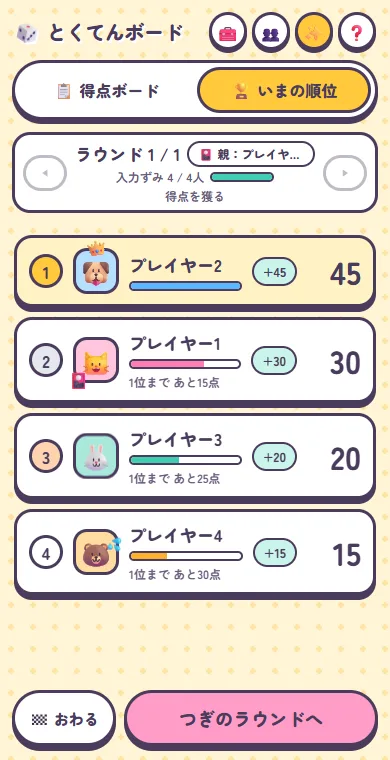
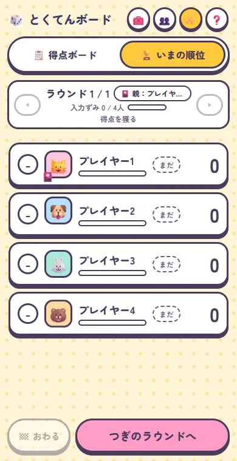

<meta charset="utf-8">
<meta name="viewport" content="width=device-width,initial-scale=1,viewport-fit=cover">
<title>松本和晃 制作ノート</title>
<link rel="preconnect" href="https://fonts.googleapis.com">
<link rel="preconnect" href="https://fonts.gstatic.com" crossorigin>
<link rel="stylesheet" href="https://fonts.googleapis.com/css2?family=BIZ+UDPGothic:wght@400;700&family=Zen+Kaku+Gothic+Antique:wght@500;700;900&family=IBM+Plex+Mono:wght@500&display=swap">
<style>
/* レイアウト：成果で掴み → 作品カード → 困りごと・工夫・成果の詳細 → できること（作品との対応表）→ 進め方 */
:root{
  --ground:#EEF1F0;
  --paper:#FAFBFA;
  --ink:#1B2427;
  --ink-2:#4A5659;
  --line:#CBD3D2;
  --edge:#B9C3C2;
  --steel:#155F78;
  --steel-hover:#0E4456;
  --steel-soft:#DCE8EC;
  --on-steel:#FFFFFF;
  --chalk:#E5AE22;
  --chalk-ink:#5C4200;
  --band:#1B2427;
  --band-fg:#EEF1F0;
  --band-sub:#B7C3C5;
  --bezel:#1B2427;
  --shadow:0 18px 34px -22px rgba(27,36,39,.5);
  --display:"Zen Kaku Gothic Antique","BIZ UDPGothic","Hiragino Kaku Gothic ProN","Yu Gothic",sans-serif;
  --body:"BIZ UDPGothic","Hiragino Kaku Gothic ProN","Yu Gothic","Meiryo",sans-serif;
  --mono:"IBM Plex Mono",ui-monospace,"Consolas",monospace;
  --head-h:64px;
  --board:#1E5B3F;
  --board-ink:#FFFFFF;
  --concrete:#9DA4A1;
  --crack:#3E4442;
}
@media (prefers-color-scheme: dark){
  :root:not([data-theme="light"]){
    color-scheme:dark;
    --ground:#111719;--paper:#182023;--ink:#E4EAE9;--ink-2:#A3B0B2;--line:#2E3A3D;--edge:#34413F;
    --steel:#6BB6CF;--steel-hover:#93CDE0;--steel-soft:#1C3139;--on-steel:#0B1F27;
    --chalk:#E9B533;--chalk-ink:#1B1400;--band:#0A0F11;--band-fg:#E4EAE9;--band-sub:#A3B0B2;--bezel:#05080A;
    --shadow:0 0 0 1px rgba(0,0,0,.25),0 18px 34px -22px rgba(0,0,0,.85);
  }
}
:root[data-theme="dark"]{
  color-scheme:dark;
  --ground:#111719;--paper:#182023;--ink:#E4EAE9;--ink-2:#A3B0B2;--line:#2E3A3D;--edge:#34413F;
  --steel:#6BB6CF;--steel-hover:#93CDE0;--steel-soft:#1C3139;--on-steel:#0B1F27;
  --chalk:#E9B533;--chalk-ink:#1B1400;--band:#0A0F11;--band-fg:#E4EAE9;--band-sub:#A3B0B2;--bezel:#05080A;
  --shadow:0 0 0 1px rgba(0,0,0,.25),0 18px 34px -22px rgba(0,0,0,.85);
}
*{box-sizing:border-box}
html{scroll-behavior:smooth}
body{margin:0;background:var(--ground);color:var(--ink);font-family:var(--body);font-size:16px;line-height:1.8;-webkit-font-smoothing:antialiased}
img{max-width:100%}
a{color:var(--steel)}
a:hover{color:var(--steel-hover)}
a:focus-visible,button:focus-visible,summary:focus-visible{outline:2px solid var(--steel);outline-offset:3px}
.wrap{max-width:1160px;margin:0 auto;padding-inline:clamp(16px,4vw,24px)}
section[id],article[id]{scroll-margin-top:calc(var(--head-h) + env(safe-area-inset-top,0px) + 12px)}
.mono{font-family:var(--mono);letter-spacing:.06em}
.code{font-family:var(--mono);font-size:12px;letter-spacing:.06em;color:var(--on-steel);background:var(--steel);padding:2px 8px;border-radius:2px;line-height:1.5}

/* ---------- ヘッダー ---------- */
.site-head{position:sticky;top:env(safe-area-inset-top,0px);z-index:10;background:var(--paper);border-bottom:1px solid var(--line)}
.site-head .wrap{display:flex;align-items:center;justify-content:space-between;gap:16px;min-height:var(--head-h)}
.brand{display:flex;align-items:baseline;gap:10px;text-decoration:none;color:var(--ink);flex:none}
.brand b{font-family:var(--display);font-weight:900;font-size:19px;letter-spacing:.08em}
.brand span{font-family:var(--mono);font-size:12px;letter-spacing:.08em;color:var(--ink-2)}
.site-nav{display:flex;gap:4px;overflow-x:auto;scrollbar-width:none;min-width:0}
.site-nav::-webkit-scrollbar{display:none}
.site-nav a{flex:none;display:inline-flex;align-items:center;min-height:44px;padding:0 12px;font-size:14px;font-weight:700;color:var(--ink);text-decoration:none;white-space:nowrap}
.site-nav a:hover{color:var(--steel)}

/* ---------- ヒーロー ---------- */
.hero{display:flex;flex-wrap:wrap;align-items:center;gap:40px 48px;padding-block:60px 56px}
.hero-text{flex:1 1 460px;min-width:0;display:flex;flex-direction:column;gap:22px}
.pair{margin:0;display:flex;flex-wrap:wrap;gap:8px;align-items:center;font-family:var(--mono);font-size:12px;letter-spacing:.08em;color:var(--ink-2)}
.pair .a{background:var(--ink);color:var(--paper);padding:3px 10px;border-radius:2px}
.pair .b{background:var(--steel);color:var(--on-steel);padding:3px 10px;border-radius:2px}
.hero h1{margin:0;font-family:var(--display);font-weight:900;font-size:clamp(32px,5vw,56px);line-height:1.3;letter-spacing:.01em;text-wrap:balance}
.hero h1 .ph{display:inline-block}
.mark{background:linear-gradient(transparent 62%,var(--chalk) 62%,var(--chalk) 92%,transparent 92%);padding-inline:2px}
.hero .lead{margin:0;max-width:34em;color:var(--ink-2)}
.cta{display:flex;flex-wrap:wrap;gap:12px;margin-top:4px}
.btn{display:inline-flex;align-items:center;gap:10px;min-height:48px;padding:0 22px;border-radius:4px;font-weight:700;text-decoration:none}
.btn.primary{background:var(--steel);color:var(--on-steel)}
.btn.primary:hover{background:var(--steel-hover);color:var(--on-steel)}
.btn.ghost{border:1.5px solid var(--ink);color:var(--ink)}
.btn.ghost:hover{border-color:var(--steel);color:var(--steel)}
.facts{margin:8px 0 0;display:flex;flex-wrap:wrap;border-top:1px solid var(--line)}
.facts div{flex:1 1 140px;padding:14px 16px 0;border-left:1px solid var(--line);min-width:0}
.facts div:first-child{padding-left:0;border-left:0}
.facts dt{font-size:12px;color:var(--ink-2)}
.facts dd{margin:0;font-family:var(--display);font-weight:900;font-size:30px;line-height:1.3;font-variant-numeric:tabular-nums}
.facts dd small{font-size:15px;font-weight:700;margin-left:4px}
.facts dd.txt{font-family:var(--body);font-size:14px;font-weight:700;line-height:1.6;padding-top:4px}
.collage{flex:1 1 420px;min-width:0;max-width:100%;position:relative;aspect-ratio:5 / 4}
.collage .f{position:absolute;background:var(--paper);border:1px solid var(--edge);border-radius:6px;overflow:hidden;box-shadow:var(--shadow)}
.collage img{display:block;width:100%;height:100%;object-fit:cover}
.collage .f1{left:0;top:0;width:66%;aspect-ratio:1000 / 720}
.collage .f2{right:0;top:30%;width:70%;aspect-ratio:760 / 534}
.collage .f3{left:10%;bottom:0;width:24%;aspect-ratio:390 / 640;border:6px solid var(--bezel);border-radius:18px;background:var(--bezel)}
.collage .f3 img{object-position:0 40%}
.collage .tag-real{position:absolute;right:4%;top:4%;font-family:var(--mono);font-size:11px;letter-spacing:.08em;color:var(--chalk-ink);background:var(--chalk);padding:3px 9px;border-radius:2px}

/* ---------- 成果の帯 ---------- */
.band{background:var(--band);color:var(--band-fg)}
.band .wrap{padding-block:48px 52px;display:flex;flex-direction:column;gap:26px}
.sec-head{display:flex;flex-wrap:wrap;align-items:baseline;gap:6px 16px}
.sec-head h2{margin:0;font-family:var(--display);font-weight:900;font-size:clamp(24px,3vw,30px);line-height:1.4;letter-spacing:.06em}
.sec-head p{margin:0;font-size:14px;color:var(--ink-2)}
.band .sec-head h2{font-size:24px;letter-spacing:.08em}
.band .sec-head p{font-size:13px;color:var(--band-sub)}
.results{display:grid;grid-template-columns:repeat(auto-fit,minmax(min(100%,230px),1fr));gap:0 24px}
.results a{display:flex;flex-direction:column;gap:6px;padding:18px 0 20px;border-top:2px solid var(--chalk);text-decoration:none;color:var(--band-fg);min-width:0}
.results .w{font-family:var(--mono);font-size:12px;letter-spacing:.06em;color:var(--chalk)}
.results .v{font-family:var(--display);font-weight:900;font-size:40px;line-height:1.2}
.results .d{font-size:14px;line-height:1.6}
.results .was{font-size:12px;color:var(--band-sub);line-height:1.6}
.results a:hover .v{color:var(--chalk)}

/* ---------- 作品カード ---------- */
.works{padding-block:72px 24px;display:flex;flex-direction:column;gap:24px}
.works-top{display:flex;flex-wrap:wrap;align-items:flex-end;justify-content:space-between;gap:16px}
.works-top .sec-head{flex-direction:column;align-items:flex-start;gap:4px}
.filter{display:flex;gap:6px;background:var(--paper);border:1px solid var(--line);border-radius:6px;padding:4px;max-width:100%;overflow-x:auto}
.filter button{flex:none;min-height:44px;padding:0 16px;border:0;border-radius:4px;font:inherit;font-size:14px;font-weight:700;cursor:pointer;background:transparent;color:var(--ink)}
.filter button[aria-pressed="true"]{background:var(--steel);color:var(--on-steel)}
.cards{display:grid;grid-template-columns:repeat(auto-fill,minmax(min(100%,300px),1fr));gap:20px}
.card{display:flex;flex-direction:column;min-width:0;background:var(--paper);border:1px solid var(--line);border-radius:8px;overflow:hidden;text-decoration:none;color:var(--ink)}
.card[hidden]{display:none}
.card:hover{border-color:var(--steel);color:var(--ink)}
.card:hover h3{color:var(--steel)}
.card .th{position:relative;aspect-ratio:16 / 10;background:var(--steel-soft);border-bottom:1px solid var(--line);overflow:hidden}
.card .th img{display:block;width:100%;height:100%;object-fit:cover;object-position:0 0}
.card .th svg{display:block;width:100%;height:100%}
.card .th .code{position:absolute;left:12px;top:12px}
.kind{position:absolute;right:12px;top:12px;font-size:12px;font-weight:700;padding:2px 10px;border-radius:999px;line-height:1.6}
.kind.biz{background:var(--chalk);color:var(--chalk-ink)}
.kind.fun{background:var(--paper);color:var(--ink);border:1px solid var(--line)}
.card .bd{display:flex;flex-direction:column;gap:10px;padding:18px 20px 20px;flex:1 1 auto}
.card h3{margin:0;font-family:var(--display);font-weight:900;font-size:21px;line-height:1.4}
.card dl{margin:0;display:grid;grid-template-columns:4.5em 1fr;gap:6px 10px;font-size:14px;line-height:1.65}
.card dt{font-size:12px;color:var(--ink-2);padding-top:2px}
.card dd{margin:0;color:var(--ink-2)}
.card dt.r{color:var(--steel);font-weight:700}
.card dd.r{color:var(--ink);font-weight:700}
.chips{list-style:none;margin:0;padding:0;display:flex;flex-wrap:wrap;gap:6px}
.card .chips{margin-top:auto;padding-top:6px}
.chips li{font-family:var(--mono);font-size:11.5px;line-height:1.5;padding:3px 8px;border:1px solid var(--line);border-radius:3px;color:var(--ink-2);background:var(--ground)}
.mini .p{fill:var(--paper);stroke:var(--ink-2)}
.mini .h{fill:var(--paper);stroke:var(--steel);stroke-width:2}
.mini .c{fill:var(--chalk)}
.mini .ar{fill:none;stroke:var(--steel);stroke-width:2.5}

/* ---------- 詳しい説明 ---------- */
.cases{padding-block:40px 24px;display:flex;flex-direction:column;gap:56px}
.case{display:flex;flex-direction:column;gap:24px;padding-top:40px;border-top:2px solid var(--ink)}
.case-head{display:flex;flex-direction:column;gap:8px;max-width:760px}
.case-meta{margin:0;display:flex;gap:10px;align-items:center;font-family:var(--mono);font-size:12px;letter-spacing:.08em;color:var(--ink-2)}
.case h3{margin:0;font-family:var(--display);font-weight:900;font-size:clamp(26px,3.4vw,32px);line-height:1.35;text-wrap:balance}
.case .lede{margin:0;font-size:17px;line-height:1.75}
.flow-steps{list-style:none;margin:0;padding:0;display:flex;flex-wrap:wrap;align-items:stretch;gap:12px}
.flow-steps .st{flex:1 1 240px;min-width:0;display:flex;flex-direction:column;gap:6px;padding:18px 20px;background:var(--paper);border:1px solid var(--line);border-radius:6px;font-size:14.5px;line-height:1.75}
.flow-steps .st b{font-family:var(--mono);font-weight:500;font-size:12px;letter-spacing:.1em;color:var(--ink-2)}
.flow-steps .st.k b{color:var(--steel)}
.flow-steps .st.r{background:var(--steel-soft);border-color:var(--steel)}
.flow-steps .st.r b{color:var(--steel)}
.flow-steps .st strong{font-family:var(--display);font-weight:900;font-size:18px;background:linear-gradient(transparent 66%,var(--chalk) 66%,var(--chalk) 94%,transparent 94%)}
.flow-steps .ar{display:flex;align-items:center;color:var(--steel)}
.case-body{display:flex;flex-wrap:wrap;gap:32px;align-items:flex-start}
.case-fig{margin:0;flex:1 1 520px;min-width:0}
.case-fig.phone-fig{flex:0 1 280px;margin-inline:auto}
.shot{display:block;width:100%;height:auto;border:1px solid var(--edge);border-radius:6px;background:var(--paper);box-shadow:var(--shadow)}
.phone{border:8px solid var(--bezel);border-radius:28px;overflow:hidden;background:var(--bezel);box-shadow:var(--shadow)}
.phone img{display:block;width:100%;height:auto}
figcaption{margin-top:10px;font-size:12px;color:var(--ink-2);line-height:1.6}
.phone-fig figcaption{text-align:center}
.case-side{flex:1 1 320px;min-width:0;display:flex;flex-direction:column;gap:18px}
.case-side h4{margin:0 0 8px;font-size:14px;letter-spacing:.06em}
.feat{margin:0;padding-left:1.2em;display:flex;flex-direction:column;gap:6px;font-size:14.5px;line-height:1.7}
.feat li::marker{color:var(--steel)}
.ver{display:grid;grid-template-columns:repeat(auto-fit,minmax(min(100%,170px),1fr));gap:10px}
.ver div{border:1px solid var(--line);background:var(--paper);border-radius:6px;padding:11px 13px;font-size:13.5px;line-height:1.65;min-width:0}
.ver b{display:block;font-size:14px;margin-bottom:2px}
.more summary{display:inline-flex;align-items:center;gap:8px;min-height:44px;cursor:pointer;list-style:none;font-size:14px;font-weight:700;color:var(--steel)}
.more summary::-webkit-details-marker{display:none}
.more summary::before{content:"＋";font-family:var(--mono);font-weight:500}
.more[open] summary::before{content:"－"}
.more .feat{margin-top:4px}
.case-side .chips li{background:var(--paper)}

/* B-3 の流れ図 */
.flow{width:100%;height:auto;display:block;background:var(--paper);border:1px solid var(--edge);border-radius:6px;box-shadow:var(--shadow)}
.flow text{font-family:var(--body);fill:var(--ink)}
.flow .sub{fill:var(--ink-2);font-size:12px}
.flow .lab{font-family:var(--mono);font-size:11px;fill:var(--steel);letter-spacing:.06em}
.flow .hl{fill:var(--steel-soft);stroke:var(--steel)}
.flow .arrow{stroke:var(--steel);stroke-width:2;fill:none}
.flow .head{fill:var(--steel)}
.flow .photo{fill:var(--paper);stroke:var(--ink-2)}
.flow .chalk{fill:var(--chalk)}
.flow .fold{fill:var(--chalk);opacity:.85}
.flow .foldtab{fill:var(--chalk)}
.flow .foldt{fill:var(--chalk-ink)}
.flow .scan{fill:var(--steel);opacity:.18}
.flow .fly{fill:var(--paper);stroke:var(--steel)}
/* B-5 の黒板図 */
.ebd .tbl{fill:var(--paper);stroke:var(--line)}
.ebd .th{fill:var(--steel-soft);stroke:var(--line)}
.ebd .off{fill:var(--ground);stroke:var(--line)}
.ebd .on{fill:#FFF3C4;stroke:var(--line)}
.ebd .tx{font-size:11px;fill:var(--ink)}
.ebd .tx.on-t{fill:#1B2427}
.ebd .tx.dim{fill:var(--ink-2)}
.ebd .ph{fill:var(--concrete)}
.ebd .ck{fill:none;stroke:var(--crack);stroke-width:2;stroke-linejoin:round}
.ebd .bb rect{fill:var(--board);stroke:var(--board-ink);stroke-width:.8}
.ebd .bb text{fill:var(--board-ink);font-family:var(--body)}
@media (prefers-reduced-motion:no-preference){
  .ebd .bb{animation:bdIn 5s ease-out infinite}
  .ebd .bb.b2{animation-delay:.6s}
  .flow .scan{animation:scan 6s linear infinite}
  .flow .fly{animation:fly 6s ease-in-out infinite;opacity:0}
  .flow .fly.f2{animation-delay:1.2s}.flow .fly.f3{animation-delay:2.4s}
  .card{transition:border-color .15s,transform .15s}
  .card:hover{transform:translateY(-2px)}
}
@media (prefers-reduced-motion:reduce){html{scroll-behavior:auto}}
@keyframes bdIn{0%,12%{opacity:0;transform:translateY(6px)}24%,88%{opacity:1;transform:none}100%{opacity:0}}
@keyframes scan{0%{transform:translateX(0)}70%,100%{transform:translateX(448px)}}
@keyframes fly{0%{opacity:0;transform:translate(0,0)}8%{opacity:1}45%{opacity:1;transform:translate(var(--dx),282px)}55%,100%{opacity:0;transform:translate(var(--dx),282px)}}

/* ---------- できること ---------- */
.skills{padding-block:72px 24px;display:flex;flex-direction:column;gap:22px}
.matrix-box{overflow-x:auto;background:var(--paper);border:1px solid var(--line);border-radius:8px}
.matrix{width:100%;min-width:860px;border-collapse:collapse;font-size:14px}
.matrix thead tr{border-bottom:2px solid var(--ink)}
.matrix th[scope="col"]{padding:14px 4px;font-family:var(--mono);font-size:12px;font-weight:500;color:var(--steel);width:68px}
.matrix th[scope="col"]:first-child{text-align:left;padding:14px 20px;font-family:var(--body);font-size:13px;font-weight:700;color:var(--ink-2);width:auto}
.matrix tbody tr{border-bottom:1px solid var(--line)}
.matrix tbody tr:last-child{border-bottom:0}
.matrix th[scope="row"]{text-align:left;padding:16px 20px;font-weight:400;vertical-align:top}
.matrix th[scope="row"] b{display:block;font-family:var(--display);font-weight:700;font-size:17px;line-height:1.5}
.matrix th[scope="row"] span{display:block;font-size:13px;color:var(--ink-2);line-height:1.65;margin-top:2px}
.matrix td{text-align:center;vertical-align:middle;padding:8px 4px}
.dot{display:inline-block;width:16px;height:16px;border-radius:50%;background:var(--steel)}
.dash{display:inline-block;width:10px;height:2px;background:var(--line);vertical-align:middle}

/* ---------- 進め方 ---------- */
.process{padding-block:64px 24px;display:flex;flex-direction:column;gap:22px}
.steps{list-style:none;margin:0;padding:0;display:grid;grid-template-columns:repeat(auto-fit,minmax(min(100%,230px),1fr));gap:14px}
.steps li{display:flex;flex-direction:column;border:1px solid var(--line);border-radius:8px;overflow:hidden;background:var(--paper);min-width:0}
.steps .t{padding:14px 18px 12px;border-bottom:1px solid var(--line)}
.steps .t span{display:block;font-family:var(--mono);font-size:12px;letter-spacing:.08em;color:var(--steel)}
.steps .t b{display:block;font-family:var(--display);font-weight:900;font-size:18px;line-height:1.5}
.steps .me,.steps .ai{padding:12px 18px;font-size:14px;line-height:1.7}
.steps .me{flex:1 1 auto}
.steps .ai{background:var(--steel-soft)}
.steps .me i,.steps .ai i{display:block;font-style:normal;font-family:var(--mono);font-size:11px;letter-spacing:.1em;color:var(--ink-2)}
.steps .ai i{color:var(--steel)}

/* ---------- 使った技術 ---------- */
.tech{padding-block:64px 72px;display:flex;flex-direction:column;gap:20px}
.tech-grid{display:grid;grid-template-columns:repeat(auto-fit,minmax(min(100%,200px),1fr));gap:12px}
.tech-grid div{display:flex;flex-direction:column;gap:8px;padding:16px 18px;border-top:2px solid var(--steel);background:var(--paper);min-width:0}
.tech-grid b{font-size:15px}
.tech-grid .it{font-family:var(--mono);font-size:12.5px;line-height:1.7}
.tech-grid .wk{font-size:12px;color:var(--ink-2)}

/* ---------- フッター ---------- */
.site-foot{background:var(--band);color:var(--band-fg)}
.site-foot .wrap{padding-block:40px 44px;display:flex;flex-wrap:wrap;justify-content:space-between;gap:24px 48px}
.site-foot .who{display:flex;flex-direction:column;gap:6px;max-width:560px;min-width:0}
.site-foot .who b{font-family:var(--display);font-weight:900;font-size:20px;letter-spacing:.1em}
.site-foot .who p{margin:0;font-size:13px;color:var(--band-sub);line-height:1.7}
.site-foot nav{display:flex;flex-direction:column;gap:10px;font-size:14px}
.site-foot nav a{color:var(--chalk);text-decoration:none;font-weight:700}
.site-foot nav a:hover{text-decoration:underline}
.site-foot .upd{font-family:var(--mono);font-size:12px;color:var(--band-sub)}
.log{flex-basis:100%;font-size:12.5px;color:var(--band-sub)}
.log summary{display:inline-flex;align-items:center;min-height:44px;cursor:pointer;font-weight:700;color:var(--band-fg)}
.log ul{list-style:none;margin:4px 0 0;padding:0;display:grid;gap:3px}
.log li{display:grid;grid-template-columns:auto 1fr;gap:12px}
.log time{font-family:var(--mono);color:var(--band-fg);font-variant-numeric:tabular-nums}

@media (max-width:760px){
  .flow-steps .ar{display:none}
  .hero{padding-block:40px 44px}
  .results .v{font-size:34px}
}
</style>

<header class="site-head">
  <div class="wrap">
    <a class="brand" href="#top"><b>松本 和晃</b><span>WORKS</span></a>
    <nav class="site-nav" aria-label="ページ内の移動">
      <a href="#results">成果</a>
      <a href="#works">作ったもの</a>
      <a href="#skills">できること</a>
      <a href="#process">進め方</a>
    </nav>
  </div>
</header>

<main id="top">

<section class="wrap hero" aria-label="はじめに">
  <div class="hero-text">
    <p class="pair"><span class="a">道路橋点検士</span><span>×</span><span class="b">CLAUDE CODE</span></p>
    <h1><span class="ph">点検現場の困りごとを、</span><span class="ph"><span class="mark">AIと一緒に</span></span><span class="ph">道具にしています。</span></h1>
    <p class="lead">橋梁の定期点検に携わる実務者です。プログラミングの専門教育は受けていませんが、現場で時間がかかっている作業をClaude Codeに日本語で伝え、毎日の業務で使える道具に仕上げています。</p>
    <div class="cta">
      <a class="btn primary" href="#works">作ったものを見る<svg aria-hidden="true" width="16" height="16" viewBox="0 0 16 16" fill="none" stroke="currentColor" stroke-width="2"><path d="M8 3v10M3.5 8.5L8 13l4.5-4.5"/></svg></a>
      <a class="btn ghost" href="#skills">できることを見る</a>
    </div>
    <dl class="facts">
      <div><dt>作ったもの</dt><dd>8<small>件</small></dd></div>
      <div><dt>うち業務用</dt><dd>5<small>件</small></dd></div>
      <div><dt>資格</dt><dd class="txt">道路橋点検士<br>生成AIパスポート</dd></div>
    </dl>
  </div>
  <div class="collage" aria-hidden="true">
    <div class="f f1"></div>
    <div class="f f2"></div>
    <div class="f f3"></div>
    <span class="tag-real">実際の画面</span>
  </div>
</section>

<section class="band" id="results" aria-labelledby="res-h">
  <div class="wrap">
    <div class="sec-head"><h2 id="res-h">導入して変わったこと</h2><p>業務用のうち4件。数字はすべて実際の業務での結果です</p></div>
    <div class="results">
      <a href="#case-b1"><span class="w">B-1 進捗の共有</span><span class="v">約15秒</span><span class="d">で全員の画面に反映</span><span class="was">以前：紙で管理し、古い情報が残りがち</span></a>
      <a href="#case-b2"><span class="w">B-2 位置図の作成</span><span class="v">その場で</span><span class="d">一覧表を選ぶだけで地図資料が完成</span><span class="was">以前：手作業で、丸1日かかることも</span></a>
      <a href="#case-b3"><span class="w">B-3 点検写真の仕分け</span><span class="v">約1分</span><span class="d">で1,000枚を橋ごとに仕分け</span><span class="was">以前：橋ごとに手で振り分け</span></a>
      <a href="#case-b4"><span class="w">B-4 交通費の請求資料</span><span class="v">1円単位</span><span class="d">で請求額と照合</span><span class="was">以前：明細を足しても請求額と合わない</span></a>
    </div>
  </div>
</section>

<section class="wrap works" id="works" aria-labelledby="works-h">
  <div class="works-top">
    <div class="sec-head"><h2 id="works-h">AIと作ったもの</h2><p>カードを選ぶと、困りごと・工夫・成果の詳しい説明へ移動します</p></div>
    <div class="filter" role="group" aria-label="作品の種類で絞り込む">
      <button type="button" id="flt-all" data-f="all" aria-pressed="true">すべて（8）</button>
      <button type="button" id="flt-biz" data-f="biz" aria-pressed="false">業務用（5）</button>
      <button type="button" id="flt-fun" data-f="fun" aria-pressed="false">個人制作（3）</button>
    </div>
  </div>
  <div class="cards">
    <a class="card" href="#case-b1" data-kind="biz">
      <div class="th"><span class="code">B-1</span><span class="kind biz">業務用</span></div>
      <div class="bd"><h3>業務進捗管理システム</h3>
        <dl><dt>困りごと</dt><dd>紙の進捗表が更新されず、古い情報が残る</dd><dt class="r">成果</dt><dd class="r">約15秒で全員の画面に反映</dd></dl>
        <ul class="chips"><li>Python / Flask</li><li>SQLite</li><li>Google Apps Script</li></ul></div>
    </a>
    <a class="card" href="#case-b2" data-kind="biz">
      <div class="th"><span class="code">B-2</span><span class="kind biz">業務用</span></div>
      <div class="bd"><h3>位置マップ一覧</h3>
        <dl><dt>困りごと</dt><dd>橋の位置を手で調べて地図に印。丸1日かかることも</dd><dt class="r">成果</dt><dd class="r">一覧表を選ぶだけで地図資料が完成</dd></dl>
        <ul class="chips"><li>HTML</li><li>Leaflet</li><li>SheetJS</li></ul></div>
    </a>
    <a class="card" href="#case-b3" data-kind="biz">
      <div class="th"><svg class="mini" role="img" aria-label="写真を橋ごとのフォルダーへ仕分ける流れの図" viewBox="0 0 320 200">
        <rect class="p" x="40" y="36" width="52" height="40" rx="2"/><rect class="h" x="102" y="36" width="52" height="40" rx="2"/><rect class="c" x="109" y="44" width="38" height="7"/><rect class="p" x="164" y="36" width="52" height="40" rx="2"/><rect class="h" x="226" y="36" width="52" height="40" rx="2"/><rect class="c" x="233" y="44" width="38" height="7"/>
        <path class="ar" d="M160 92 V118 M152 110 L160 120 L168 110"/>
        <rect class="c" x="56" y="132" width="36" height="10" rx="2"/><rect class="c" x="56" y="138" width="96" height="40" rx="3"/>
        <rect class="c" x="172" y="132" width="36" height="10" rx="2"/><rect class="c" x="172" y="138" width="96" height="40" rx="3"/>
      </svg><span class="code">B-3</span><span class="kind biz">業務用</span></div>
      <div class="bd"><h3>写真の橋梁別分類</h3>
        <dl><dt>困りごと</dt><dd>1日で数百〜千枚の写真を、橋ごとに手で振り分け</dd><dt class="r">成果</dt><dd class="r">1,000枚を約1分で仕分け</dd></dl>
        <ul class="chips"><li>PowerShell</li><li>Windows OCR</li></ul></div>
    </a>
    <a class="card" href="#case-b4" data-kind="biz">
      <div class="th"><span class="code">B-4</span><span class="kind biz">業務用</span></div>
      <div class="bd"><h3>交通費請求資料作成</h3>
        <dl><dt>困りごと</dt><dd>明細を足しても請求額と合わない</dd><dt class="r">成果</dt><dd class="r">請求額と1円単位で照合</dd></dl>
        <ul class="chips"><li>Python</li><li>openpyxl</li><li>自動テスト</li></ul></div>
    </a>
    <a class="card" href="#case-b5" data-kind="biz">
      <div class="th"><svg class="ebd" role="img" aria-label="点検写真の右下に、橋梁名・径間・部材・損傷の種類を書いた緑の黒板が重なった図" viewBox="0 0 320 200">
        <rect class="ph" x="0" y="0" width="320" height="200"/>
        <path class="ck" d="M18 40 L70 62 L96 58 L150 92 L176 88 L214 120 M96 58 L104 30 M150 92 L140 128"/>
        <g class="bb"><rect x="168" y="112" width="140" height="78"/><line x1="168" y1="132" x2="308" y2="132" stroke="#FFFFFF" stroke-width=".8"/><line x1="168" y1="152" x2="308" y2="152" stroke="#FFFFFF" stroke-width=".8"/><line x1="206" y1="112" x2="206" y2="152" stroke="#FFFFFF" stroke-width=".8"/>
          <text x="174" y="126" font-size="10">橋梁名</text><text x="212" y="126" font-size="10">〇〇線1号橋</text><text x="174" y="146" font-size="10">部材</text><text x="212" y="146" font-size="10">Mg01</text><text x="238" y="178" font-size="17" text-anchor="middle">ひびわれ</text></g>
      </svg><span class="code">B-5</span><span class="kind biz">業務用</span></div>
      <div class="bd"><h3>電子黒板合成ツール</h3>
        <dl><dt>困りごと</dt><dd>写真を貼り終えたあとに、急に「黒板を入れて」と指示が来る</dd><dt class="r">成果</dt><dd class="r">貼った写真にあとから黒板を付け、急な要望にも簡単に対応</dd></dl>
        <ul class="chips"><li>Excel VBA</li><li>データ記録様式</li></ul></div>
    </a>
    <a class="card" href="#case-p1" data-kind="fun">
      <div class="th"><span class="code">P-1</span><span class="kind fun">個人制作</span></div>
      <div class="bd"><h3>画像加工Pro</h3>
        <dl><dt>内容</dt><dd>写真にスタンプ・文字・漫画風の加工</dd><dt class="r">工夫</dt><dd class="r">顔の認識も人物の切り抜きもスマホの中で処理</dd></dl>
        <ul class="chips"><li>Canvas</li><li>MediaPipe</li><li>PWA</li></ul></div>
    </a>
    <a class="card" href="#case-p2" data-kind="fun">
      <div class="th"><span class="code">P-2</span><span class="kind fun">個人制作</span></div>
      <div class="bd"><h3>スタンプ工房</h3>
        <dl><dt>内容</dt><dd>写真の切り抜き・手描き・ロゴ・ハンコからスタンプを自作</dd><dt class="r">使い道</dt><dd class="r">LINEスタンプ申請用ZIPやシール印刷に書き出し</dd></dl>
        <ul class="chips"><li>Canvas</li><li>MediaPipe</li><li>PWA</li></ul></div>
    </a>
    <a class="card" href="#case-p3" data-kind="fun">
      <div class="th"><span class="code">P-3</span><span class="kind fun">個人制作</span></div>
      <div class="bd"><h3>とくてんボード</h3>
        <dl><dt>内容</dt><dd>ボードゲームの点数を記録し、順位をその場で表示</dd><dt class="r">工夫</dt><dd class="r">UNO・スカルキングなどは点数を自動で計算</dd></dl>
        <ul class="chips"><li>JavaScript</li><li>自動テスト</li><li>PWA</li></ul></div>
    </a>
  </div>
</section>

<section class="wrap cases" aria-label="作品の詳しい説明">

  <article class="case" id="case-b1">
    <div class="case-head">
      <p class="case-meta"><span class="code">B-1</span>業務用 ／ 進捗管理</p>
      <h3>業務進捗管理システム</h3>
      <p class="lede">橋ごと・工程ごとの進み具合を、複数人がブラウザで同時に更新できる進捗表です。</p>
    </div>
    <ol class="flow-steps" aria-label="困りごとから成果まで">
      <li class="st"><b>1 困りごと</b>紙で進捗を管理していて、更新されないまま古い情報が残っていることが多かった。</li>
      <li class="ar" aria-hidden="true"><svg width="22" height="22" viewBox="0 0 22 22" fill="none" stroke="currentColor" stroke-width="2.2"><path d="M4 11h13M12 5.5L17.5 11 12 16.5"/></svg></li>
      <li class="st k"><b>2 工夫</b>状態を色で示し、誰がいつ更新したかを自動で記録。職場の環境に合わせて選べるよう、社内LAN版とGoogle版を用意した。</li>
      <li class="ar" aria-hidden="true"><svg width="22" height="22" viewBox="0 0 22 22" fill="none" stroke="currentColor" stroke-width="2.2"><path d="M4 11h13M12 5.5L17.5 11 12 16.5"/></svg></li>
      <li class="st r"><b>3 成果</b><span>更新したその場で、<strong>約15秒後には全員の画面に反映</strong>。誰がいつ更新したかも残る。</span></li>
    </ol>
    <div class="case-body">
      <figure class="case-fig">
        <picture><source srcset="img/progress.webp" media="(prefers-reduced-motion: reduce)"></picture>
        <figcaption>マスを選んで状態を保存すると、色と担当者名がすぐ変わります（社内LAN版）。橋梁名・担当者名はデモ用のサンプルです。</figcaption>
      </figure>
      <div class="case-side">
        <div><h4>主な機能</h4>
          <ul class="feat">
            <li>状態は4色（作業中＝黄、優先＝赤、一時停止＝橙、完了＝緑）。更新の履歴を後から確認できる</li>
            <li>行・列の見出しを入れたExcelを読み込むだけで表ができる</li>
            <li>利用者登録は承認制、プロジェクトごとに参加者を制限</li>
          </ul></div>
        <div class="ver">
          <div><b>社内LAN版</b>社内PC 1台をサーバーにして動かす。インターネットに出さずに使える。</div>
          <div><b>Google版</b>Googleドライブ上で動く。サーバーPC不要で、スマホからも使える。</div>
        </div>
        <ul class="chips" aria-label="使った技術"><li>Python / Flask</li><li>SQLite</li><li>Google Apps Script</li><li>スプレッドシート</li><li>HTML / JavaScript</li></ul>
      </div>
    </div>
  </article>

  <article class="case" id="case-b2">
    <div class="case-head">
      <p class="case-meta"><span class="code">B-2</span>業務用 ／ 地図資料</p>
      <h3>位置マップ一覧</h3>
      <p class="lede">番号・名前・緯度経度の一覧表を読み込むと、旗と番号を立てた地図と一覧表が並んだ資料ができます。</p>
    </div>
    <ol class="flow-steps" aria-label="困りごとから成果まで">
      <li class="st"><b>1 困りごと</b>橋の位置を手作業で調べて地図に印を付けていたため、件数によっては丸1日かかっていた。</li>
      <li class="ar" aria-hidden="true"><svg width="22" height="22" viewBox="0 0 22 22" fill="none" stroke="currentColor" stroke-width="2.2"><path d="M4 11h13M12 5.5L17.5 11 12 16.5"/></svg></li>
      <li class="st k"><b>2 工夫</b>Excel・CSVの見出しを自動で探して列を判定する。見出しが2段・3段の表でも、そのまま読み込める。</li>
      <li class="ar" aria-hidden="true"><svg width="22" height="22" viewBox="0 0 22 22" fill="none" stroke="currentColor" stroke-width="2.2"><path d="M4 11h13M12 5.5L17.5 11 12 16.5"/></svg></li>
      <li class="st r"><b>3 成果</b><span><strong>一覧表を選ぶだけ</strong>で、旗付きの地図と一覧表がその場で完成。</span></li>
    </ol>
    <div class="case-body">
      <figure class="case-fig">
        <picture><source srcset="img/map.webp" media="(prefers-reduced-motion: reduce)"></picture>
        <figcaption>公開されている橋梁の位置で作った例。地図：国土地理院 地理院タイル（標準地図）。</figcaption>
      </figure>
      <div class="case-side">
        <div><h4>主な機能</h4>
          <ul class="feat">
            <li>「当初」と「変更」の座標が並ぶ表では、変更側を自動で選ぶ</li>
            <li>全地点が収まる縮尺に自動調整、一覧の行をクリックするとその地点へ移動</li>
            <li>A3（地図と一覧を1枚）とA4（2枚に分割）で印刷・PDF保存</li>
            <li>背景は国土地理院の標準地図・航空写真・淡色地図から選択</li>
          </ul></div>
        <ul class="chips" aria-label="使った技術"><li>HTML 1ファイル</li><li>Leaflet</li><li>SheetJS</li><li>地理院タイル</li></ul>
      </div>
    </div>
  </article>

  <article class="case" id="case-b3">
    <div class="case-head">
      <p class="case-meta"><span class="code">B-3</span>業務用 ／ 写真整理</p>
      <h3>写真の橋梁別分類</h3>
      <p class="lede">1日分の点検写真を撮影順に並べ、損傷図の用紙に書かれた「橋梁名」を文字認識で読み取って、橋ごとのフォルダーにコピーします。</p>
    </div>
    <ol class="flow-steps" aria-label="困りごとから成果まで">
      <li class="st"><b>1 困りごと</b>1日に何橋も回ると写真が数百〜千枚になり、橋ごとに手で振り分けていた。</li>
      <li class="ar" aria-hidden="true"><svg width="22" height="22" viewBox="0 0 22 22" fill="none" stroke="currentColor" stroke-width="2.2"><path d="M4 11h13M12 5.5L17.5 11 12 16.5"/></svg></li>
      <li class="st k"><b>2 工夫</b>元の写真は動かさず、コピーだけを作る。読み取りが怪しい写真には「確認してください」と印を付けて一覧に出す。</li>
      <li class="ar" aria-hidden="true"><svg width="22" height="22" viewBox="0 0 22 22" fill="none" stroke="currentColor" stroke-width="2.2"><path d="M4 11h13M12 5.5L17.5 11 12 16.5"/></svg></li>
      <li class="st r"><b>3 成果</b><span><strong>1,000枚を約1分</strong>で仕分け。ダブルクリックで実行するだけ。</span></li>
    </ol>
    <div class="case-body">
      <figure class="case-fig">
        <svg class="flow" viewBox="0 0 560 400" role="img" aria-labelledby="flowT">
          <title id="flowT">処理の流れ：日別の写真フォルダーから、橋梁名が写った写真を文字認識で見つけ、橋ごとのフォルダーにコピーする</title>
          <text class="lab" x="24" y="34">1　日別フォルダー（撮影順）</text>
          <g>
            <rect class="photo" x="24" y="48" width="50" height="38" rx="2"/>
            <rect class="photo" x="80" y="48" width="50" height="38" rx="2"/>
            <rect class="hl" x="136" y="48" width="50" height="38" rx="2"/>
            <rect class="chalk" x="142" y="56" width="38" height="7"/>
            <rect class="photo" x="192" y="48" width="50" height="38" rx="2"/>
            <rect class="photo" x="248" y="48" width="50" height="38" rx="2"/>
            <rect class="hl" x="304" y="48" width="50" height="38" rx="2"/>
            <rect class="chalk" x="310" y="56" width="38" height="7"/>
            <rect class="photo" x="360" y="48" width="50" height="38" rx="2"/>
            <rect class="photo" x="416" y="48" width="50" height="38" rx="2"/>
            <rect class="photo" x="472" y="48" width="50" height="38" rx="2"/>
            <text class="sub" x="24" y="106">色付き ＝ 損傷図の用紙が写った写真（橋梁名欄あり）</text>
          </g>
          <rect class="scan" x="22" y="44" width="54" height="46" rx="3"/>
          <rect class="fly" style="--dx:55px" x="24" y="48" width="50" height="38" rx="2"/>
          <rect class="fly f2" style="--dx:119px" x="136" y="48" width="50" height="38" rx="2"/>
          <rect class="fly f3" style="--dx:127px" x="304" y="48" width="50" height="38" rx="2"/>
          <path class="arrow" d="M280 118 V146"/><path class="head" d="M274 142 L280 152 L286 142 Z"/>
          <text class="lab" x="24" y="176">2　文字認識で「橋梁名」欄を読む</text>
          <rect class="hl" x="24" y="188" width="512" height="54" rx="4"/>
          <text x="44" y="213" font-size="14">橋梁名　<tspan font-weight="700">〇〇線1号橋</tspan></text>
          <text class="sub" x="44" y="232">読み間違いは補正表で自動修正</text>
          <text class="sub" x="330" y="222">→ 次の橋梁名まで同じ橋</text>
          <path class="arrow" d="M280 250 V278"/><path class="head" d="M274 274 L280 284 L286 274 Z"/>
          <text class="lab" x="24" y="308">3　橋ごとのフォルダーへコピー</text>
          <g>
            <rect class="foldtab" x="24" y="320" width="44" height="10" rx="2"/><rect class="fold" x="24" y="326" width="160" height="48" rx="3"/>
            <text class="foldt" x="36" y="355" font-size="13" font-weight="700">00_橋梁名不明</text>
            <rect class="foldtab" x="200" y="320" width="44" height="10" rx="2"/><rect class="fold" x="200" y="326" width="160" height="48" rx="3"/>
            <text class="foldt" x="212" y="355" font-size="13" font-weight="700">〇〇線1号橋</text>
            <rect class="foldtab" x="376" y="320" width="44" height="10" rx="2"/><rect class="fold" x="376" y="326" width="160" height="48" rx="3"/>
            <text class="foldt" x="388" y="355" font-size="13" font-weight="700">△△線2号橋</text>
          </g>
        </svg>
        <figcaption>画面を持たないツールのため、処理の流れを図にしています。</figcaption>
      </figure>
      <div class="case-side">
        <div><h4>主な機能</h4>
          <ul class="feat">
            <li>橋梁名の写真から、次の橋梁名の写真の手前までを同じ橋として扱う</li>
            <li>手書きの読み間違いは補正表に1行足せば、次回から自動で直る</li>
            <li>Windows標準の日本語OCRを使うので、追加のソフトは不要</li>
          </ul></div>
        <ul class="chips" aria-label="使った技術"><li>PowerShell</li><li>Windows OCR（日本語）</li><li>CSV</li></ul>
      </div>
    </div>
  </article>

  <article class="case" id="case-b4">
    <div class="case-head">
      <p class="case-meta"><span class="code">B-4</span>業務用 ／ 経費精算</p>
      <h3>交通費請求資料作成</h3>
      <p class="lede">交通系ICカードの利用履歴（CSV）を読み込み、画面で確認・修正して、提出用のExcel一覧表を出力します。</p>
    </div>
    <ol class="flow-steps" aria-label="困りごとから成果まで">
      <li class="st"><b>1 困りごと</b>利用明細を見ながら請求資料を作成。PiTaPaは定期登録・区間指定の分が月額の定額になるため、明細を足しても実際の請求額と合わない。</li>
      <li class="ar" aria-hidden="true"><svg width="22" height="22" viewBox="0 0 22 22" fill="none" stroke="currentColor" stroke-width="2.2"><path d="M4 11h13M12 5.5L17.5 11 12 16.5"/></svg></li>
      <li class="st k"><b>2 工夫</b>定額分と実費分を分けて、鉄道・バス会社ごとに集計。CSV末尾の支払額と照合し、合わないときだけ警告を出す。</li>
      <li class="ar" aria-hidden="true"><svg width="22" height="22" viewBox="0 0 22 22" fill="none" stroke="currentColor" stroke-width="2.2"><path d="M4 11h13M12 5.5L17.5 11 12 16.5"/></svg></li>
      <li class="st r"><b>3 成果</b><span>CSVを読み込むだけで提出用Excelが完成。<strong>請求額と1円単位で照合</strong>済み。</span></li>
    </ol>
    <div class="case-body">
      <figure class="case-fig">
        <picture><source srcset="img/kotsu.webp" media="(prefers-reduced-motion: reduce)"></picture>
        <figcaption>CSVを読み込み、「土日祝を対象外」を押すと件数と合計が変わります。氏名・駅名は「サンプル 太郎」「Ａ町」などに置き換えたデモデータです。</figcaption>
      </figure>
      <div class="case-side">
        <div><h4>主な機能</h4>
          <ul class="feat">
            <li>PiTaPa・モバイルSuicaなどの形式と文字コードを自動で判別</li>
            <li>土日祝をまとめて対象外にできる（祝日はネット接続なしで判定）。外した分は合計にすぐ反映</li>
            <li>いつもの通勤と違う経路を薄い黄色で示し、確認漏れを防ぐ</li>
            <li>26項目の自動テストで、直すたびに計算結果が変わっていないか確認</li>
          </ul></div>
        <ul class="chips" aria-label="使った技術"><li>Python</li><li>openpyxl</li><li>HTML / JavaScript</li><li>自動テスト</li></ul>
      </div>
    </div>
  </article>

  <article class="case" id="case-b5">
    <div class="case-head">
      <p class="case-meta"><span class="code">B-5</span>業務用 ／ 写真台帳</p>
      <h3>電子黒板合成ツール</h3>
      <p class="lede">点検調書（データ記録様式 その１０ 損傷写真）の写真に、橋梁名・径間・部材・損傷の種類を書いた電子黒板を付けるExcelのツールです。</p>
    </div>
    <ol class="flow-steps" aria-label="困りごとから成果まで">
      <li class="st"><b>1 困りごと</b>台帳に写真を貼り終えたあとで、急に「写真に黒板を入れてほしい」と指示が来た。</li>
      <li class="ar" aria-hidden="true"><svg width="22" height="22" viewBox="0 0 22 22" fill="none" stroke="currentColor" stroke-width="2.2"><path d="M4 11h13M12 5.5L17.5 11 12 16.5"/></svg></li>
      <li class="st k"><b>2 工夫</b>写真の上の欄（写真番号・径間・部材・損傷の種類）を読み取って黒板を作る。部材名は記号（主桁→Mg、竪壁→Ac など）に自動で置き換える。</li>
      <li class="ar" aria-hidden="true"><svg width="22" height="22" viewBox="0 0 22 22" fill="none" stroke="currentColor" stroke-width="2.2"><path d="M4 11h13M12 5.5L17.5 11 12 16.5"/></svg></li>
      <li class="st r"><b>3 成果</b><span>貼り終えた写真にあとから黒板を付けられ、<strong>急な要望にも簡単に対応できる</strong>。台帳を選んでボタンを順に押すだけで、黒板は何度でも付け直せる。</span></li>
    </ol>
    <div class="case-body">
      <figure class="case-fig">
        <svg class="flow ebd" viewBox="0 0 560 400" role="img" aria-labelledby="ebdT">
          <title id="ebdT">処理の流れ：黒板設定シートで写真ごとに黒板の有無・位置・大きさを決めると、台帳の損傷写真に電子黒板が重なる</title>
          <text class="lab" x="24" y="28">1　黒板設定（写真ごとに 入れる／位置／大きさ）</text>
          <rect class="th" x="24" y="40" width="512" height="24"/>
          <text class="tx" x="34" y="56">写真</text><text class="tx" x="84" y="56">部材</text><text class="tx" x="204" y="56">損傷の種類</text><text class="tx" x="334" y="56">黒板</text><text class="tx" x="404" y="56">位置</text><text class="tx" x="464" y="56">大きさ</text>
          <rect class="tbl" x="24" y="64" width="512" height="24"/>
          <rect class="on" x="324" y="64" width="212" height="24"/>
          <text class="tx" x="34" y="80">1</text><text class="tx" x="84" y="80">主桁 01（Mg01）</text><text class="tx" x="204" y="80">ひびわれ</text><text class="tx on-t" x="334" y="80">入れる</text><text class="tx on-t" x="404" y="80">右下</text><text class="tx on-t" x="464" y="80">40%</text>
          <rect class="off" x="24" y="88" width="512" height="24"/>
          <text class="tx dim" x="34" y="104">2</text><text class="tx dim" x="84" y="104">主桁 01（Mg01）</text><text class="tx dim" x="204" y="104">ひびわれ</text><text class="tx dim" x="334" y="104">入れない</text>
          <rect class="tbl" x="24" y="112" width="512" height="24"/>
          <rect class="on" x="324" y="112" width="212" height="24"/>
          <text class="tx" x="34" y="128">3</text><text class="tx" x="84" y="128">竪壁 01（Ac01）</text><text class="tx" x="204" y="128">剥離・鉄筋露出</text><text class="tx on-t" x="334" y="128">入れる</text><text class="tx on-t" x="404" y="128">左上</text><text class="tx on-t" x="464" y="128">30%</text>
          <path class="arrow" d="M280 146 V168"/><path class="head" d="M274 164 L280 174 L286 164 Z"/>
          <text class="lab" x="24" y="196">2　台帳（その１０）の写真に黒板が重なる</text>
          <rect class="ph" x="24" y="208" width="252" height="172" rx="2"/>
          <path class="ck" d="M36 238 L90 262 L118 256 L170 290 L196 284 L236 316 M118 256 L128 226 M170 290 L160 330"/>
          <g class="bb"><rect x="152" y="302" width="118" height="72"/><line x1="152" y1="320" x2="270" y2="320" stroke="#FFFFFF" stroke-width=".8"/><line x1="152" y1="338" x2="270" y2="338" stroke="#FFFFFF" stroke-width=".8"/><line x1="184" y1="302" x2="184" y2="338" stroke="#FFFFFF" stroke-width=".8"/><line x1="200" y1="320" x2="200" y2="338" stroke="#FFFFFF" stroke-width=".8"/><line x1="226" y1="320" x2="226" y2="338" stroke="#FFFFFF" stroke-width=".8"/>
            <text x="156" y="315" font-size="9">橋梁名</text><text x="190" y="315" font-size="9.5">〇〇線1号橋</text><text x="156" y="333" font-size="9">径間</text><text x="188" y="333" font-size="9.5">1</text><text x="204" y="333" font-size="9">部材</text><text x="232" y="333" font-size="9.5">Mg01</text><text x="211" y="363" font-size="16" text-anchor="middle">ひびわれ</text></g>
          <rect class="ph" x="290" y="208" width="246" height="172" rx="2"/>
          <path class="ck" d="M330 300 L372 286 L410 318 L452 304 L496 336 L520 330 M410 318 L404 360"/>
          <rect x="430" y="240" width="70" height="26" rx="2" fill="#7B5A45" opacity=".7"/>
          <g class="bb b2"><rect x="296" y="214" width="100" height="62"/><line x1="296" y1="230" x2="396" y2="230" stroke="#FFFFFF" stroke-width=".8"/><line x1="296" y1="246" x2="396" y2="246" stroke="#FFFFFF" stroke-width=".8"/><line x1="324" y1="214" x2="324" y2="246" stroke="#FFFFFF" stroke-width=".8"/>
            <text x="299" y="226" font-size="8">橋梁名</text><text x="328" y="226" font-size="8.5">〇〇線1号橋</text><text x="299" y="242" font-size="8">部材</text><text x="328" y="242" font-size="8.5">Ac01</text><text x="346" y="266" font-size="11" text-anchor="middle">剥離・鉄筋露出</text></g>
        </svg>
        <figcaption>業務の台帳には実在の橋梁名が入るため、画面写真の代わりに処理の流れを図にしています。橋梁名はサンプルです。</figcaption>
      </figure>
      <div class="case-side">
        <div><h4>主な機能</h4>
          <ul class="feat">
            <li>写真ごとに、黒板を入れる／入れない、位置（四隅）、大きさ（写真の幅に対する％）を選べる。空欄の写真は既定値を使う</li>
            <li>「電子黒板を外す」で写真だけに戻せる。「画像に合成」は元に戻せないので、最後に使う手順に分けた</li>
            <li>マクロはツール側のブックだけに入れ、台帳ファイルにはマクロを入れない</li>
            <li>台帳が見つからない、シートが保護されているなど、黒板を付けられないときは理由を表示する</li>
          </ul></div>
        <ul class="chips" aria-label="使った技術"><li>Excel VBA</li><li>データ記録様式（その１０）</li><li>部材記号（付表）</li></ul>
      </div>
    </div>
  </article>

  <article class="case" id="case-p1">
    <div class="case-head">
      <p class="case-meta"><span class="code">P-1</span>個人制作 ／ 写真加工</p>
      <h3>画像加工Pro</h3>
      <p class="lede">撮った写真や手持ちの写真に、スタンプ・文字・吹き出しを貼ったり、漫画風に仕上げたりして遊べるスマホ向けアプリです。</p>
    </div>
    <ol class="flow-steps" aria-label="内容からつながりまで">
      <li class="st"><b>1 内容</b>スタンプ・文字・吹き出しを貼り、集中線や効果音、コマ枠で漫画風に仕上げる。写真を並べて4コマ漫画も作れる。</li>
      <li class="ar" aria-hidden="true"><svg width="22" height="22" viewBox="0 0 22 22" fill="none" stroke="currentColor" stroke-width="2.2"><path d="M4 11h13M12 5.5L17.5 11 12 16.5"/></svg></li>
      <li class="st k"><b>2 工夫</b>写真はスマホの外に送らない。顔の認識や人物の切り抜きもスマホの中で処理する。</li>
      <li class="ar" aria-hidden="true"><svg width="22" height="22" viewBox="0 0 22 22" fill="none" stroke="currentColor" stroke-width="2.2"><path d="M4 11h13M12 5.5L17.5 11 12 16.5"/></svg></li>
      <li class="st r"><b>3 つながり</b><span><strong>スタンプ工房（P-2）</strong>で作ったスタンプが「マイ帳」に並び、そのまま写真に貼れる。</span></li>
    </ol>
    <div class="case-body">
      <figure class="case-fig phone-fig">
        <div class="phone"><picture><source srcset="img/stamp.webp" media="(prefers-reduced-motion: reduce)"></picture></div>
        <figcaption>おまかせガチャで飾り、漫画風タブで集中線を重ねたところ</figcaption>
      </figure>
      <div class="case-side">
        <div><h4>主な機能</h4>
          <ul class="feat">
            <li>セリフ・人物顔・食べ物・乗り物などのスタンプをタップで追加。指で移動、2本指で拡大・回転</li>
            <li>プライベートモード：写っている人の顔を自動で見つけて隠す</li>
            <li>吹き出しと文字入れ（縦書き・横書き、フチ・影）。書体はスタンプ工房と共通のものから選べ、貼ったあとも書き直せる</li>
          </ul>
          <details class="more"><summary>ほかの機能（3件）</summary>
            <ul class="feat">
              <li>セピア・モノクロなどの写真加工。「タップで人物を選ぶ」で人物だけを前に出し、背景だけを加工できる</li>
              <li>「おまかせガチャ」でランダムに飾り付け、ジョークの「AI診断」も</li>
              <li>スマホのホーム画面に追加でき、通信がないときでも開ける</li>
            </ul>
          </details></div>
        <ul class="chips" aria-label="使った技術"><li>HTML / Canvas</li><li>MediaPipe（顔検出・人物切り抜き）</li><li>ホーム画面に追加（PWA）</li><li>スマホ対応</li></ul>
      </div>
    </div>
  </article>

  <article class="case" id="case-p2">
    <div class="case-head">
      <p class="case-meta"><span class="code">P-2</span>個人制作 ／ スタンプ作成</p>
      <h3>スタンプ工房</h3>
      <p class="lede">写真から切り抜く方法と、手描き・ロゴ・ハンコなど一から作る方法で、オリジナルのスタンプを作るアプリです。</p>
    </div>
    <ol class="flow-steps" aria-label="作り方から使い道まで">
      <li class="st"><b>1 作り方</b>写真から作る「切り抜き系」4つと、一から作る「製作系」4つ。はじめの画面のタブで切り替える。</li>
      <li class="ar" aria-hidden="true"><svg width="22" height="22" viewBox="0 0 22 22" fill="none" stroke="currentColor" stroke-width="2.2"><path d="M4 11h13M12 5.5L17.5 11 12 16.5"/></svg></li>
      <li class="st k"><b>2 工夫</b>保存したスタンプは画像加工Proに自動で並ぶ。写真は端末の外に送らず、切り抜きや顔の検出も端末の中で処理する。</li>
      <li class="ar" aria-hidden="true"><svg width="22" height="22" viewBox="0 0 22 22" fill="none" stroke="currentColor" stroke-width="2.2"><path d="M4 11h13M12 5.5L17.5 11 12 16.5"/></svg></li>
      <li class="st r"><b>3 使い道</b><span>PNG・動くGIFのほか、<strong>LINEスタンプ申請用のZIP</strong>、Discord・Slackの絵文字、シール用紙への印刷で書き出せる。</span></li>
    </ol>
    <div class="case-body">
      <figure class="case-fig phone-fig">
        <div class="phone"><picture><source srcset="img/maker.webp" media="(prefers-reduced-motion: reduce)"></picture></div>
        <figcaption>「製作系」のタブからハンコ製作を選び、日付印にして色を変え、仕上げへ進むところ。名前はサンプルです。</figcaption>
      </figure>
      <div class="case-side">
        <div><h4>主な機能</h4>
          <ul class="feat">
            <li>写真の中の欲しい物をタップするだけで、AIが範囲を選んで切り抜く。欠けた所はもう一度タップするか、ブラシで直せる</li>
            <li>ハンコ製作は丸印・角印・日付印・矢印など8種類の形。書体は全部の作り方で共通の22種類と、ハンコ専用の3種類。かすれ・にじみで紙に押したような風合いに</li>
            <li>アニメ調・水彩・油絵・スケッチ・版画・ドット絵などのスタイルでイラストに変換。見本を大きく並べて見比べられる</li>
          </ul>
          <details class="more"><summary>ほかの機能（3件）</summary>
            <ul class="feat">
              <li>ロゴ製作は13種類のデザイン。テーマを選ぶと言葉の候補と配色がおまかせで決まる</li>
              <li>作ったスタンプは、タップで開くメニューから名前の変更や書き出しができる。バックアップをファイルに保存して、機種変更のあとに読み込める</li>
              <li>スマホのホーム画面に追加でき、通信がないときでも開ける</li>
            </ul>
          </details></div>
        <ul class="chips" aria-label="使った技術"><li>HTML / Canvas</li><li>MediaPipe（タップで切り抜き・顔検出）</li><li>GIF / ZIP書き出し</li><li>ホーム画面に追加（PWA）</li></ul>
      </div>
    </div>
  </article>

  <article class="case" id="case-p3">
    <div class="case-head">
      <p class="case-meta"><span class="code">P-3</span>個人制作 ／ ボードゲーム</p>
      <h3>とくてんボード</h3>
      <p class="lede">ボードゲームの点数をスマホでかんたんに記録し、いまの順位と結果発表まで見せるアプリです。</p>
    </div>
    <ol class="flow-steps" aria-label="内容からつながりまで">
      <li class="st"><b>1 内容</b>メンバーとルールを選び、名前をタップして点数を入れる。順位はその場で並び替わり、最後は結果発表。</li>
      <li class="ar" aria-hidden="true"><svg width="22" height="22" viewBox="0 0 22 22" fill="none" stroke="currentColor" stroke-width="2.2"><path d="M4 11h13M12 5.5L17.5 11 12 16.5"/></svg></li>
      <li class="st k"><b>2 工夫</b>UNO・スカルキング・パパヨー・波乱と海原は、それぞれの決まりに合わせて点数を自動で計算する。計算は自動テストで毎回確かめる。</li>
      <li class="ar" aria-hidden="true"><svg width="22" height="22" viewBox="0 0 22 22" fill="none" stroke="currentColor" stroke-width="2.2"><path d="M4 11h13M12 5.5L17.5 11 12 16.5"/></svg></li>
      <li class="st r"><b>3 つながり</b><span><strong>スタンプ工房（P-2）</strong>で作ったアイコンを、メンバーのアイコンとして使える。</span></li>
    </ol>
    <div class="case-body">
      <figure class="case-fig phone-fig">
        <div class="phone"><picture><source srcset="img/score.webp" media="(prefers-reduced-motion: reduce)"></picture></div>
        <figcaption>4人に続けて点数を入れると、順位がその場で並び替わります。名前は初期設定のままです。</figcaption>
      </figure>
      <div class="case-side">
        <div><h4>主な機能</h4>
          <ul class="feat">
            <li>数字パッドと ±1・±5・±10 のボタンで点数を入れ、「つぎは〇〇」で次の人へ続けて入力できる</li>
            <li>得点ボード（ラウンドごと・累計）とグラフ。まちがえたら「もどす」で取り消せる</li>
            <li>はじめてガイドとルールの説明つき。これまでのゲームと実績も残る</li>
          </ul>
          <details class="more"><summary>ほかの機能（3件）</summary>
            <ul class="feat">
              <li>おまけ：計算・タイマー・サイコロと、ミニゲーム3つ（パパヨー叩き・神経衰弱・パパヨーvsスカルキング）</li>
              <li>お題カード：ジャスト・ワンなど向けに、6つのジャンルからお題を出す</li>
              <li>スマホのホーム画面に追加でき、通信がないときでも開ける</li>
            </ul>
          </details></div>
        <ul class="chips" aria-label="使った技術"><li>HTML / JavaScript</li><li>自動テスト</li><li>ホーム画面に追加（PWA）</li><li>スマホ対応</li></ul>
      </div>
    </div>
  </article>
</section>

<section class="wrap skills" id="skills" aria-labelledby="skills-h">
  <div class="sec-head"><h2 id="skills-h">できること</h2><p>コードはClaude Codeが書きます。自分の役割は次の4つで、●はその力を示している作品です</p></div>
  <div class="matrix-box">
    <table class="matrix">
      <thead><tr><th scope="col">スキル</th><th scope="col">B-1</th><th scope="col">B-2</th><th scope="col">B-3</th><th scope="col">B-4</th><th scope="col">B-5</th><th scope="col">P-1</th><th scope="col">P-2</th><th scope="col">P-3</th></tr></thead>
      <tbody>
        <tr><th scope="row"><b>1　現場の困りごとを整理する</b><span>紙の進捗表、手作業の地図、写真の振り分け、写真ごとの黒板付けなど、時間がかかる作業を見つけて言葉にする</span></th>
          <td><span class="dot" role="img" aria-label="B-1で発揮"></span></td><td><span class="dot" role="img" aria-label="B-2で発揮"></span></td><td><span class="dot" role="img" aria-label="B-3で発揮"></span></td><td><span class="dot" role="img" aria-label="B-4で発揮"></span></td><td><span class="dot" role="img" aria-label="B-5で発揮"></span></td><td><span class="dash" aria-hidden="true"></span></td><td><span class="dash" aria-hidden="true"></span></td><td><span class="dash" aria-hidden="true"></span></td></tr>
        <tr><th scope="row"><b>2　何を作るかを決める</b><span>社内LAN版とGoogle版を用意（B-1）、元の写真は動かさない（B-3）、台帳にマクロを入れない（B-5）、写真を端末の外に送らない（P-1・P-2）</span></th>
          <td><span class="dot" role="img" aria-label="B-1で発揮"></span></td><td><span class="dash" aria-hidden="true"></span></td><td><span class="dot" role="img" aria-label="B-3で発揮"></span></td><td><span class="dash" aria-hidden="true"></span></td><td><span class="dot" role="img" aria-label="B-5で発揮"></span></td><td><span class="dot" role="img" aria-label="P-1で発揮"></span></td><td><span class="dot" role="img" aria-label="P-2で発揮"></span></td><td><span class="dash" aria-hidden="true"></span></td></tr>
        <tr><th scope="row"><b>3　実際のデータで確かめる</b><span>請求額と1円単位で照合・26項目の自動テスト（B-4）、読み取りが怪しい写真に印（B-3）、点数計算の自動テスト（P-3）</span></th>
          <td><span class="dash" aria-hidden="true"></span></td><td><span class="dash" aria-hidden="true"></span></td><td><span class="dot" role="img" aria-label="B-3で発揮"></span></td><td><span class="dot" role="img" aria-label="B-4で発揮"></span></td><td><span class="dash" aria-hidden="true"></span></td><td><span class="dash" aria-hidden="true"></span></td><td><span class="dash" aria-hidden="true"></span></td><td><span class="dot" role="img" aria-label="P-3で発揮"></span></td></tr>
        <tr><th scope="row"><b>4　ほかの人が使える形に仕上げる</b><span>承認制の利用者登録（B-1）、ダブルクリックで実行（B-3）、ボタンを順に押す操作画面（B-5）、使い方説明書の改訂（P-2）、はじめてガイド（P-3）</span></th>
          <td><span class="dot" role="img" aria-label="B-1で発揮"></span></td><td><span class="dash" aria-hidden="true"></span></td><td><span class="dot" role="img" aria-label="B-3で発揮"></span></td><td><span class="dash" aria-hidden="true"></span></td><td><span class="dot" role="img" aria-label="B-5で発揮"></span></td><td><span class="dash" aria-hidden="true"></span></td><td><span class="dot" role="img" aria-label="P-2で発揮"></span></td><td><span class="dot" role="img" aria-label="P-3で発揮"></span></td></tr>
      </tbody>
    </table>
  </div>
</section>

<section class="wrap process" id="process" aria-labelledby="proc-h">
  <div class="sec-head"><h2 id="proc-h">AIとの進め方</h2><p>上が自分、下がClaude Codeの役割です</p></div>
  <ol class="steps">
    <li><div class="t"><span>STEP 1</span><b>困りごとを言葉にする</b></div><div class="me"><i>自分</i>何に時間がかかっているか、どう使いたいかを日本語で伝える</div><div class="ai"><i>CLAUDE CODE</i>作り方や設計の相談に乗る</div></li>
    <li><div class="t"><span>STEP 2</span><b>何を作るか決める</b></div><div class="me"><i>自分</i>使う人と場面に合わせて、形と守ることを決める</div><div class="ai"><i>CLAUDE CODE</i>コードを書いて試作する</div></li>
    <li><div class="t"><span>STEP 3</span><b>実際のデータで試す</b></div><div class="me"><i>自分</i>業務データで試し、合わない所や使いにくい所を見つける</div><div class="ai"><i>CLAUDE CODE</i>指摘を受けて直す</div></li>
    <li><div class="t"><span>STEP 4</span><b>使える形に仕上げる</b></div><div class="me"><i>自分</i>操作説明書や導入手順を整える</div><div class="ai"><i>CLAUDE CODE</i>説明書づくりを手伝う</div></li>
  </ol>
</section>

<section class="wrap tech" aria-labelledby="tech-h">
  <div class="sec-head"><h2 id="tech-h">使った技術</h2></div>
  <div class="tech-grid">
    <div><b>Web画面</b><span class="it">HTML / JavaScript ・ Canvas ・ Leaflet ・ SheetJS</span><span class="wk">使った作品：B-1 B-2 B-4 P-1 P-2 P-3</span></div>
    <div><b>Excel</b><span class="it">VBA（マクロ）</span><span class="wk">使った作品：B-5</span></div>
    <div><b>Python</b><span class="it">Flask ・ SQLite ・ openpyxl</span><span class="wk">使った作品：B-1 B-4</span></div>
    <div><b>Google</b><span class="it">Apps Script ・ スプレッドシート</span><span class="wk">使った作品：B-1</span></div>
    <div><b>Windows</b><span class="it">PowerShell ・ Windows OCR</span><span class="wk">使った作品：B-3</span></div>
    <div><b>AI・画像</b><span class="it">MediaPipe（顔検出・切り抜き）</span><span class="wk">使った作品：P-1 P-2</span></div>
  </div>
</section>

</main>

<footer class="site-foot">
  <div class="wrap">
    <div class="who">
      <b>松本 和晃</b>
      <p>掲載画面の橋梁名・担当者名はサンプルです。発注者名などの業務情報は掲載していません。地図画像の出典：国土地理院（地理院タイル）。</p>
    </div>
    <nav aria-label="ほかのページ">
      <a href="https://kmatsumotoaicreate-sys.github.io/credentials/">資格ポートフォリオ →</a>
      <a href="https://github.com/kmatsumotoaicreate-sys">GitHub →</a>
      <span class="upd">最終更新 2026.10.28</span>
    </nav>
    <details class="log"><summary>更新履歴</summary>
      <ul>
        <li><time datetime="2026-10-28">2026.10.28</time><span>B-5 電子黒板合成ツールと P-3 とくてんボードを追加。B-5 に困りごとと成果を追記</span></li>
        <li><time datetime="2026-10-18">2026.10.18</time><span>ページ全体の構成を見直し。成果・作品カード・困りごと→工夫→成果の説明・できることの対応表・AIとの進め方にまとめ直した</span></li>
        <li><time datetime="2026-10-11">2026.10.11</time><span>P-2 スタンプ工房の説明と画面を最新版に更新（はじめの画面を3つのタブに変更、イラストのスタイル追加、バックアップ）</span></li>
        <li><time datetime="2026-10-09">2026.10.09</time><span>P-1 画像加工Proの説明と画面を最新版に更新。P-2 にホーム画面への追加を追記</span></li>
        <li><time datetime="2026-10-09">2026.10.09</time><span>P-2 スタンプ工房の説明を最新版に更新（切り抜き系4つ・製作系4つ、「ロゴ製作」に名称変更）</span></li>
        <li><time datetime="2026-10-09">2026.10.09</time><span>冒頭に「導入後の変化」「できること」と画面付きの作品一覧を追加</span></li>
        <li><time datetime="2026-10-06">2026.10.06</time><span>P-2 スタンプ工房を追加。P-1 を「画像加工Pro」に名称変更</span></li>
        <li><time datetime="2026-09-29">2026.09.29</time><span>B-4 交通費請求資料作成を追加。P-1 を最新版に更新</span></li>
        <li><time datetime="2026-09-24">2026.09.24</time><span>公開（業務用3件・娯楽用1件）</span></li>
      </ul>
    </details>
  </div>
</footer>

<script>
(function(){
  var btns=document.querySelectorAll('.filter button');
  var cards=document.querySelectorAll('.cards .card');
  btns.forEach(function(b){
    b.addEventListener('click',function(){
      var f=b.getAttribute('data-f');
      btns.forEach(function(x){x.setAttribute('aria-pressed',x===b?'true':'false')});
      cards.forEach(function(c){c.hidden=!(f==='all'||c.getAttribute('data-kind')===f)});
    });
  });
})();
</script>
